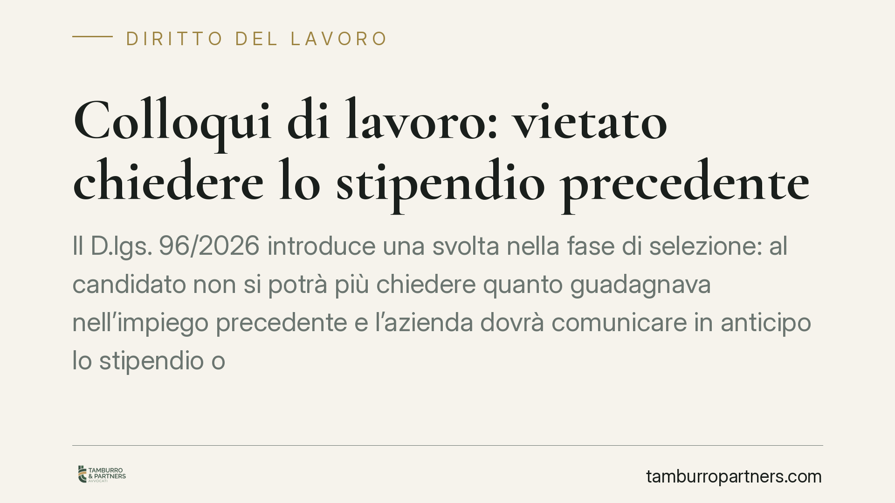

Colloqui di lavoro: vietato chiedere lo stipendio precedente
Il D.lgs. 96/2026 introduce una svolta nella fase di selezione: al candidato non si potrà più chiedere quanto guadagnava nell'impiego precedente e l'azienda dovrà comunicare in anticipo lo stipendio o la fascia retributiva offerta. Regole valide per tutte le imprese, senza soglie dimensionali. Cambiano prassi consolidate di recruiting e obblighi informativi.

Il contesto
La domanda "quanto guadagnavi prima?" è stata per anni un passaggio quasi rituale dei colloqui. Serviva ai selezionatori come parametro per calibrare l'offerta economica. Quella prassi, dal 2026, diventa illegittima.
L'art. 6 del D.lgs. 96/2026 attua in Italia la direttiva UE 2023/970 sulla trasparenza retributiva. Il legislatore europeo parte da una constatazione: ancorare la nuova retribuzione a quella passata perpetua le disuguaglianze, in particolare il divario retributivo di genere. Chi entra nel mercato con uno stipendio basso rischia di trascinarselo per tutta la carriera.
Inquadramento normativo
L'art. 6 del D.lgs. 96/2026 introduce due obblighi speculari a carico del datore di lavoro.
Il primo è un divieto: il datore, e per suo conto il recruiter, non può chiedere al candidato informazioni sulla retribuzione percepita nei rapporti di lavoro precedenti o in corso. Il divieto riguarda la fase che precede l'assunzione, cioè annunci, colloqui e trattative.
Il secondo è un obbligo di trasparenza attiva: prima del colloquio, o comunque prima dell'assunzione, l'azienda deve comunicare al candidato la retribuzione iniziale o la relativa fascia (il cosiddetto *pay range*), individuata sulla base di criteri oggettivi e neutri rispetto al genere. L'informazione deve essere fornita in modo da consentire una trattativa consapevole.
La disciplina si applica a tutte le imprese, a prescindere dal numero di dipendenti. Non esistono esenzioni per micro o piccole realtà: è un dato che segna una discontinuità rispetto a molti obblighi lavoristici tarati sulle dimensioni aziendali.
Implicazioni pratiche per le aziende
Per chi assume, il cambiamento è concreto e immediato.
Le procedure di selezione vanno riviste. Format di colloquio, questionari preliminari e schede candidato che contengono la voce "retribuzione attuale" o "ultima RAL" devono essere aggiornati: quella domanda non può più comparire.
Gli annunci di lavoro e le comunicazioni pre-assuntive devono contenere l'indicazione della retribuzione o della fascia offerta. Non basta più rinviare la questione economica al momento finale della trattativa.
Anche il rapporto con soggetti terzi va presidiato. Agenzie per il lavoro, società di head hunting e recruiter esterni agiscono per conto del datore: le loro condotte ricadono sulla responsabilità dell'azienda committente. Serve quindi allineare contrattualmente i fornitori del servizio di selezione.
Cosa cambia per il candidato
Dal lato di chi cerca lavoro, la novità rafforza la posizione negoziale.
Il candidato non è tenuto a rivelare quanto guadagna e può legittimamente rifiutarsi di rispondere. Riceve inoltre, prima del colloquio, un'informazione che finora era spesso oscurata fino all'ultimo: quanto l'azienda è disposta a offrire.
Questo sposta l'asimmetria informativa. La trattativa non parte più dallo storico personale del lavoratore, ma dal valore che l'azienda attribuisce alla posizione.
Cosa fare in concreto
- Verificate la modulistica di selezione: eliminate da annunci, form online e schede colloquio ogni richiesta relativa alla retribuzione precedente o attuale.
- Definite le fasce retributive per ciascuna posizione, sulla base di criteri oggettivi e documentabili, neutri rispetto al genere.
- Aggiornate gli annunci di lavoro inserendo lo stipendio o il *pay range* offerto, con le modalità richieste dalla norma.
- Adeguate i contratti con recruiter e agenzie esterne, imponendo per iscritto il rispetto del divieto e dell'obbligo informativo.
- Formate il personale HR e chi conduce i colloqui, così da evitare che la domanda vietata riemerga in forma orale o indiretta.
Raccomandiamo di intervenire prima dell'avvio delle prossime campagne di reclutamento: la revisione delle procedure richiede tempo e coinvolge funzioni diverse, dalla direzione del personale al legale interno.
Disclaimer
Contributo informativo a cura di Tamburro & Partners - Avv. Giuseppe Tamburro. Non costituisce parere legale.
Ogni storia di lavoro ha i suoi tempi.
Se gestisci HR e vuoi un confronto su contenzioso, ispezioni o licenziamenti, scrivi allo studio. Ti rispondiamo entro un giorno lavorativo.